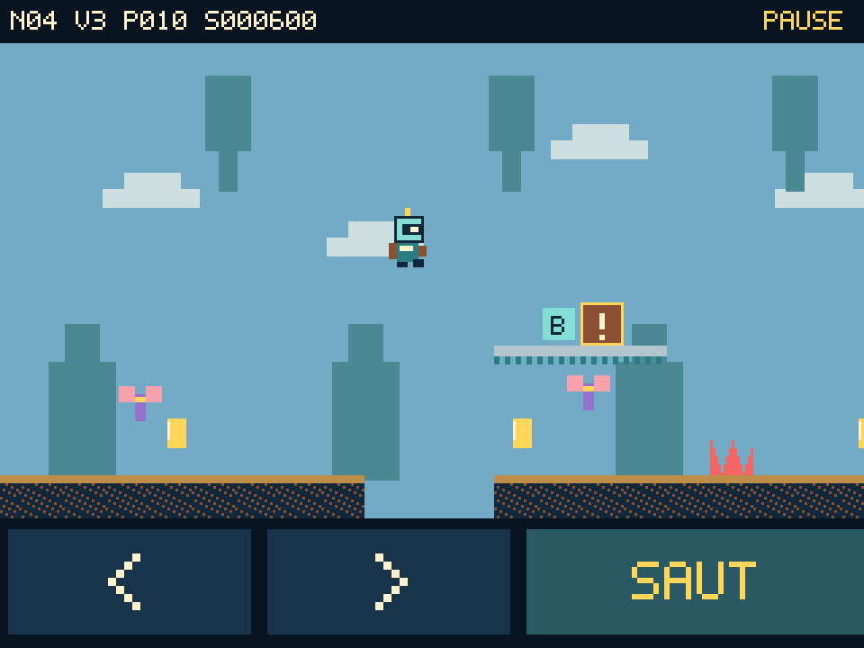

maintenir pour marcher ; au-delà de 0,4 s, le robot court
appui : sauter ; relâcher tôt : saut plus court
depuis une flèche, glisser vers le haut ; redescendre le doigt écourte le saut
relever le doigt puis toucher hors des boutons : REPRENDRE ou MENU PRINCIPAL